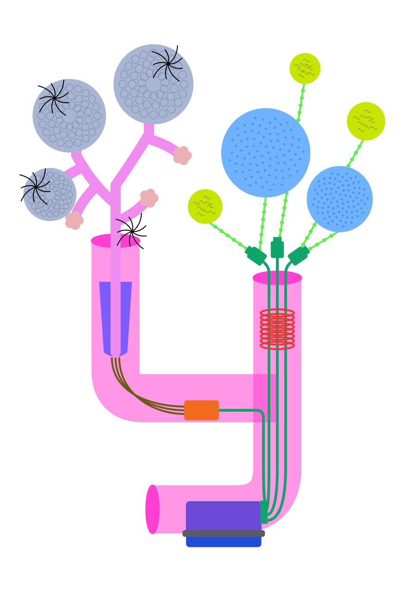
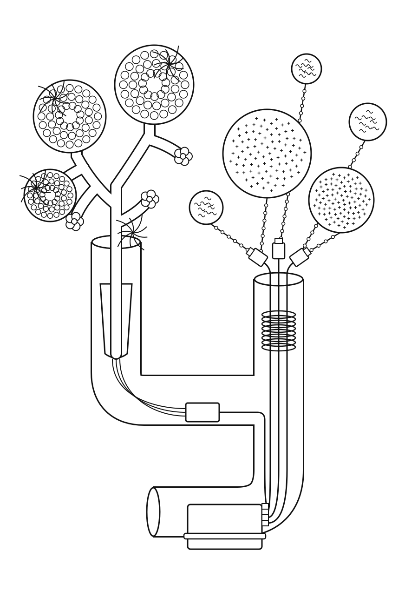

1. Half in, half outSame box, same spot. It passes through the bottom wall, sealed by a gasket. Cables run along the pipe floor and plug into the box's side, inside the glass.


2. Fully outside, one holeSame box, tucked directly under the pipe. Cables come down the elbow, leave through one grommet and click straight into its top.